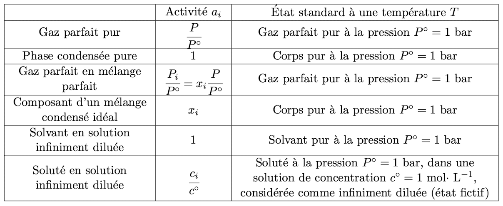
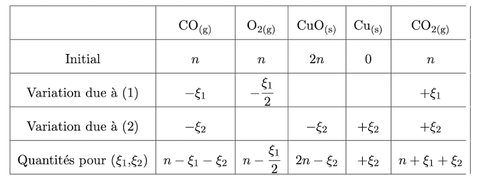
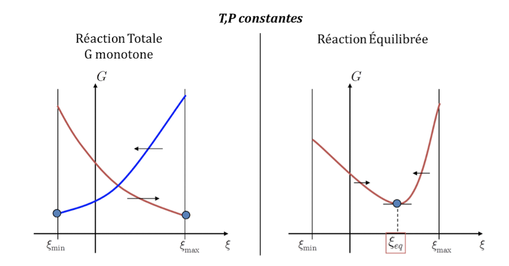
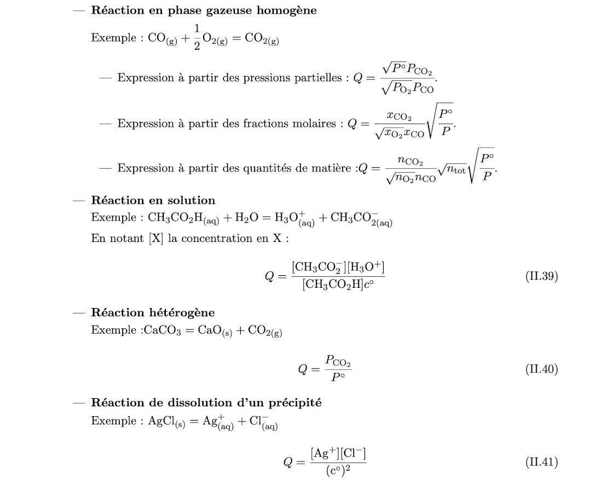
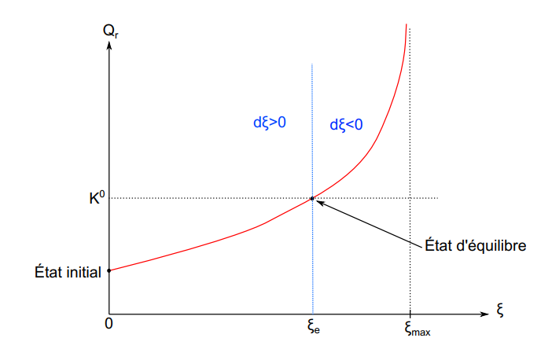
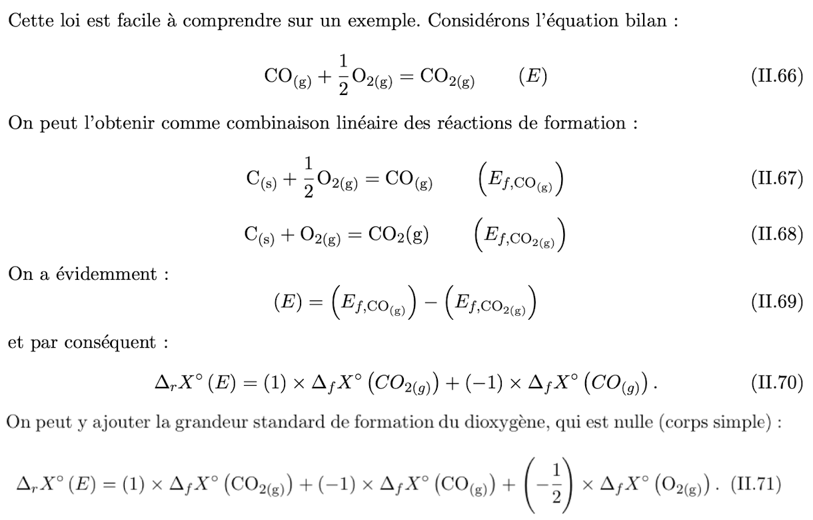
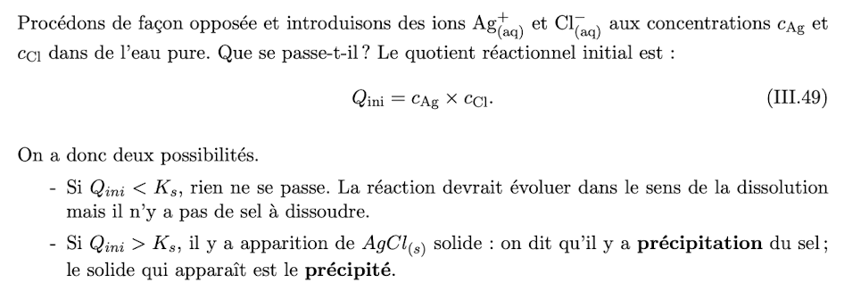

Mélange et Potentiel Chimique
26 Avril 2023
Description d'un système physico-chimique
- Corps = Composé = constituant = espèce
- Corps Pur :échantillon constitué d'une seule sorte d'entités
- Exemple : \(H_{2}, \; H_{2}O, \; Fe\)
- Corps Simple : Corps pur constitué d'un seul élément chipique
- Espèce physico-chimique : \((g),\;(l),\;(s),\;(aq)\) (Ici, \((aq)\) représent un soluté en solution aqueuse)
- Mélange : Échantillon constitué de plusieurs espèces pures
- Homogène ou monophasé : composés dans le même état physique avec une seule phase
- Hétérogène ou multiphasé : au moins deux phase distinctes, on a aussi biphasé ou triphasé
- Composition d'un mélange :
- Fractions molaires : \(x_{i}=\frac{n_{i}}{n_{tot}}\)
- Fraction massiques : \(w_{i}= \frac{m_{i}}{m_{tot}}\)
- Concentration molaires : \(c_{i}= \frac{n_{i}}{V}\)
Évolution et Équilibre Chimique
Équation Bilan
-
Composé Physico-chimiques : \(A_i\) et \(B_i\), \(H_2O_{(l)} \ne H_2O_{(g)}\)
- Reáctifs et Produits
-
Nombres stœchiométriques
- Nombres stœchiométriques algébriques :
-
\((E)\) peut considérée comme un vecteur d'un espace vectoriel.
Enthalpie Libre, Potentiel Chimique
Enthalpie libre
-
L'enthalpie libre (énergie de Gibbs) du système définie par :
-
Évolution MTMB :
- Défintion : En contact avec l'atmosphère qui fait office de thermostat à \(T_{0}\) et pressiostat à \(P_{0}\). Nous considérerons des transformations MTMB pour les quelles :
- Pour une transformation MTMB : Rappelle : \(\Delta H = \Delta U+\Delta PV = W+Q+P_{0}\Delta V=(-P_{0}\Delta V+ W_{u})+P_{0}\Delta V+Q\) En conclusion :
- Principe d'évolution : Un état d'équilibre thermodynamique minimise l'enthalpie libre \(G\) d'un système en évolution MTMB, compte tenu des contratines imposées.
- Critère de spontanéité d'une transoformation : \(\Delta_rG \le 0\)
Potentiel Chimique
-
Pour un mélange monophasé de \(S, V\) composé des \(N\) espèces \(A_{i}\) avec \(n_i\) moles, trouvera \(G(T, P, n_{1},n_{2},\dots)\), nous définissons le potentiel chimique \(\mu_{i}\) du corps \(A_{i}\) dans le mélange :
-
Le potentiel chimique \(\mu_{i}\) d'un corps pur donné est le même dans toutes les phases.
Identité Thermodynamique
-
En déduire l'Identité thermodynamique, au cours d'une transformation imaginaire où la température varie de \(\mathrm{d}T\), la pression de \(\mathrm{d}P\) et les quantités \(n_{i}\) de \(\mathrm{d}n_{i}\),
-
Mémorasation d'identité thermodynamique :
Se Trouve Près de Vous Grand Homme est Fort Utile.
Donc,
Relation d'Euler
- Relation d'Euler : car pour une constant réele \(\lambda\) qq., \(G\) est une grandeur extensive, homogène du premier ordre : Dérivons cette relation par rapport à \(\lambda\) à \(T\) et \(P\) constantes, en posant \(\lambda=1\) on aura le résultat.
- Conclusion : L'enthalpie libre du système est la somme des potentiels chimiques multipliés par les nombres de moles :
Expression générale du potentiel chimique
- Le potentiel chimique a une expression générale :
où
- \(\mu_i^\circ (T)\) est le potentiel standard du composé dans l'échelle d'activité choisite.
- \(a_i\) est l'activité ( coefficient d'activité ) du corps \(A_i\), sans dimension. 
Définition de diluée : \(x_\text{solvant} \to 1\)
Preuve : Voir les chapitres suivantes.
État Standard
- Les états standard sont des états choisis par convention comme référence pour les états d’une espèce.
- Quel que soit l’état physique d’une espèce, son état standard correspond à une pression de référence dite pression standard.
- À chaque température \(T\) correspond un état standard particulier
- Pour un gaz à \(T\) , pur ou dans un mélange, l’état standard est le gaz parfait pur à \(T\) sous \(P°\)
- Pour une espèce solide ou liquide, pure ou dans un mélange, l’état standard correspond à cette espèce pure dans le même état physique que dans le mélange, à la même température et sous la pression P°.
Gaz Parfait
Notation : pour un gaz pur, il est d'usage de désigner cette situation avec \(*\), comme \(\mu^*\)
Gaz parfait pur
- Potentiel chimique en fonction de la pression :
Preuve :
Mélange idéal de gaz parfaits
-
Définition - mélange idéal de gaz parfaits : un mélange de gaz
- qui se comporte globalement comme un gaz parfait
- dans lequel le potentiel chimique du gaz \(i\) est donné par
-
Pression partielle du composé \(A_i\) dans le mélange par :
-
Loi de Dalton :
-
L'enthalpie libre :
-
L'entropie du système :
- L'entropie de mélange est toujours positive, le mélange est plus désordonné.
Phase condensées
Phase condensées pur
-
Potentiel chimique en fonction de la pression : > Preuve : même façon, mais cette fois ci, \(V_m\) est presque constante, donc c'est une substraction.
- Rappel que : \(\mu^\circ(T) = \mu^*(T, P^\circ)\)
- La deuxième terme est souvent négligable.
-
Phase condensées idéale :
- La deuxième terme est nulle, le potentiel chimique est indépendant de la pression.
Mélange idéal de phases condensées
-
Le mélange est idéal ssi le potentiel chimique du composé \(A_i\) s'écrit :
-
Le mélange idéal de phases condensées idéales :
Solution idéales
Solution, solution idéales, solvant, solutés
- Solution : un mélange, l'un des constituants, le solvant en quantité \(\gg\) les solutés.
- Solution idéale : \(x_\text{solvant} \to 1\)
Potentiel chimique
-
Solvant :
-
Soluté :
- La concentration \(c_i\) du constituant \(A_i\) :
- Introduit la concentration standard : \(c^\circ = 1 \; mol.L^{-1}\)
- On a :
- Donc :
Évolution et équilibre chimique
Avancement
- La variable \(\xi\) unité \(\text{mol}\) définit par
-
Donc q.q.s. l'état de transformation du système :
-
Tableau d'avancement
- \(\xi = \xi_\text{max}\) Réactif limitant, réaction totale en sens direct
- \(\xi = \xi_\text{min}\) Produit limitant, réaction totale en sens inverse
- Cas où plusieurs réactions sont possibles : 
-
Profil de Réaction : La courbe représentant \(G(T,P, \xi)= G(\xi)|_{T,P}\).
- Il permet de prévoir l'évolution du système. 
L'état d'équilibre chimique
-
L'état d'équilibre chimique : \((T, P, \xi_{eq}) = \arg\min_\xi G(T,P,\xi)\)
-
Donc, le système finit lorsque
- Atteint la réaction thermodynamiquement totale, tel qu'un des composés complètement disparu
- Atteint \((T,P,\xi_{eq})\)
Enthalpie libre de réaction
-
Enthalpie libre de réaction, s'exprime en \(J.mol^{-1}\) :
-
En réaction équilibrée (si \(\exists\)): \(\Delta_rG(\xi_{eq}) = 0\), mais l'inverse est FAUX.
-
Q.q.s. \(\xi\), on a :
Preuve : \(G\) diminue, donc :
-
Évolution spontannée irréversible, car
-
Dans une réaction \(0 = \sum_i \nu_i C_i\), expression générale :
Preuve :
Enthalpie libre standard de réaction, Quotient réactionnel
- L'enthalpie libre standard de réaction \(\Delta_r G^\circ(T)\), Le quotient réactionnel \(Q\) : avec car
-
Avec ces définitions, on obtient :
-
Rappelle que
Exemples : 
Constante de réaction
-
La constante de réaction, pour que on puisse réécrit la forme de \(\Delta_r G\) :
-
Le quotient de réaction dépend de l'avancement et de la pression, mais la constante d'équilibre ne dépend que de la \(T\).
Loi de Guldberg et Waage
- Loi d'action des masses ou Loi de Guldberg et Waage : à l'équilibre,
- Si \(Q < K^\circ(T)\), \(\Delta_rG(\xi)<0\), l'évolution \((\to)\)
- Si \(Q >K^\circ(T)\), \(\Delta_rG(\xi)>0\), l'évolution \((\leftarrow)\)

Grandeurs standard de réaction
Enthalpie molaire standard
-
Enthalpie molaire standard : L'enthalpie molaire \(H_m\) d'un composé physico-chimique dans l'état standard, notée \(H_m^\circ(T)\), s'exprime en \(J/mol\)
-
Pour les GP et phases condensées idéales purs, \(H_m\) ne dépend que \(T\), donc l'expression :
Capacité thermique standard
- Capacité thermique molaire standard à pression constante, s'exprime en \(J/K .mol\):
Entropie molaire standard
-
Entropie molaire standard, s'exprime en \(J/K .mol\) : \(S_m\)
-
Variation en fonction de \(T\) :
Relations de Kirchhoff, Approxmiation d'Ellingham
- Deux Relations de Kirchhoff : Variations avec la température :
Preuve : ???
- Approximation d'Ellingham :
- \(\Delta_r H^\circ (T)\) et \(\Delta_r S^\circ(T)\) ne dépendent pas de \(T\), les dérivations sont considérées nulles.
Enthalpie libre standard de réaction (Calculation)
-
Calculation de l'enthalpie libre standard de réaction : est une fonction affine de la \(T\).
-
Le signe de \(\frac{\mathrm{d}K^\circ}{\mathrm{d}T}\) est celui de \(\Delta_r H^\circ(T)\).
Preuve(???) : D'après l'approximation d'Ellingham, transforme \(\Delta_r S^\circ\)
- Le relation de Van't Hoff :
Réaction standard de formation
-
Définition (Théorique, pas réalisable) : Un corps formé à partir de corps simples, pris dans leur état standard d'agrégation le plus stable à la pression standard, et le cœfficient stœchiométrique du corps \(\nu = +1\).
-
État standard de référence d'un élément chimique à \(T\) : Le corps simple dans l'état physique le plus stable.
Exemple : \(H\) à \(298K\) est \(H_2(g)\)
- État standard d'agrégation le plus stable à \(T\) et à \(P\) standard.
- La grandeur standard de formation : \(\Delta_f X^\circ\) est la \(\Delta_r X^\circ\) appliquée à l'équation bilan de formation du composée.
Loi de Hess
- Théorème : Loi de Hess : Pour l'équation \(0 = \sum_i \nu_iC_i\),
Exemple : 
Effets Thermiques d'une réaction chimique
Enthalpie d'un système réactionnel
- Cas d'un mélange idéal : en sachant que \(H(T, \xi) = \sum_i n_i H_{m,i}^*(T) = \sum_i (n_{i 0} + \nu_i\xi) H_{m,i}^\circ(T)\)（我觉得是 \(H_m\)） et l'énergie interne : \(U(T, \xi) = H(T, \xi) - n_{gaz}(\xi) \times RT\)
Réaction Endothermique, Exothermique, Athermique
- Dans une transformation MTMB, la chaleur reçue par le système au cours de la réaction est :
- \(\Delta_r H^\circ >0\), réaction endothermique, le milieu reçoit une chaleur positive
- \(\Delta_r H^\circ <0\), réaction exothermique, le milieu donne une chaleur positive
- \(\Delta_r H^\circ =0\), réaction athermique
Transformation MTMB (au-dessus), MT, MB adiabatique
-
Dans une transformation MT, la chaleur reçue sera :
-
Dans une transformation MB adiabatique,
- Cela peut se produire dans deux cas :
- l'enceinte, parois calorifugées
- réaction trop vite, se passe dans les flammes
- Analyse : D'abord déterminer les quantités de produits, soit parce que la réaction est totale, soit par la relation de Guldberg et Waage, ensuite
- Cela peut se produire dans deux cas :
Exemples d'équilibres chimiques
Généralisations sur les influences
-
Pression :
- Les réactions avec diminution de la quantité de gaz sont favorisées dans le sens direct à haut pression.
- Les réactions avec augmentation de la quantité de gaz sont favorisées dans le sens direct à basse pression.
-
Température :
- Les réactions endothermiques sont favorisées dans le sens direct par une élévation de température.
- Les réactions exothermiques sont favorisées dans le sens direct par une élévation de température.
-
Quantité : La quantité du produit obtenu est maximale pour un mélange initial stoechiométrique.
-
Gaz Inertie : (Gaz futile, impureté) On a intérêt à travailler sans gaz inertie. (Évidemment)
Exemple : Voir ce document
Réactions acido-basiques en solution aqueuse
- Acides \(\neq\) Bases : susceptibles de libérer/capter un (ou plusieurs) proton(s).
- Amphotères : à la fois acides et basiques > Exemple : L'eau
- Couple acide/basique : \(A\) est l'acide conjugué de \(B\), de même pour \(B\).
-
Autoprotolyse de l'eau 质子自迁移反应 :
-
Produit ionique de l'eau : constante d'quilibre de l'autoprotolyse de l'eau :
-
Constante d'acidité \(K_a\) de l'acide la constante d'équilibre de cette réaction :
- On utilise la notation :
Dissolutions en milieu aqueux
-
Constante de solubilité : La constante d'équilibre \(K_s\) de réaction, par exemple,
-
Solution saturée : Un état d'équilibre coexiste avec les ions en solution. On a alors une solution saturée.
Exemple : Encore \(AgCl\), \(K_s = [Ag^+][Cl^-]/(C^\circ)^2 = (c_\xi/c^\circ)^2\) Soit \(c_{init} = n/V < \sqrt{K_s} c^\circ\), on n'atteint pas l'équilibre, la réaction est totale, sinon, il y a une coexistence.
-
Solubilité : La quantité maximale de ce que l'on peut dissoudre totalement par unité de volume de solution.
-
Précipitation
Exemple : 